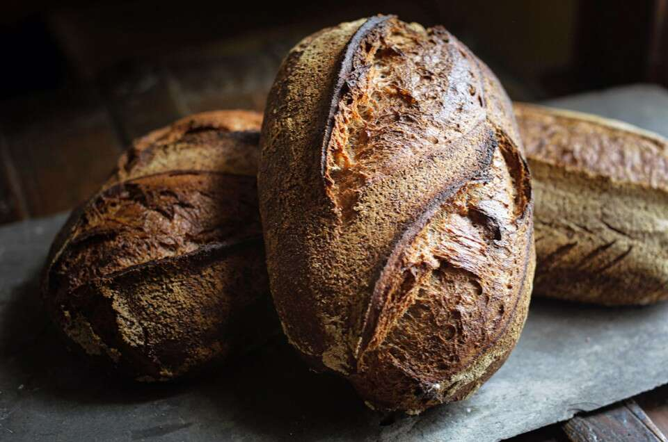

High-Hydration Whole Wheat Sourdough Bread

Descripton
This whole wheat sourdough bread is a bit of a project, with its ultra-high hydration (the slack dough resists easy handling) and long timeline (nearly two days start to finish). But, like good wine and cheese, what emerges after the work and wait — a robust, deeply flavored loaf with a moist crumb and great keeping qualities — is just reward for the effort.
Ingredients
Starter
- 10g Active sourdough culture
- 50g Whole Wheat flour
- 40g Water, room temperature
Preferment
- 135g Whole Wheat flour
- 108g Water, room temperature
- 27g of the whole wheat starter (above)
- 3g Salt
Autolyse
- 764g Whole Wheat flour
- 701g Water
Final dough
- All the preferment (above)
- All the autolyse (above)
- 17g Salt
- 45g Water, room temperature
Steps
- To make the starter: Start this midafternoon (about 2:30 p.m.) two days before you plan to bake the bread: Weigh your flour; or measure it by gently spooning it into a cup, then sweeping off any excess.
- Mix all the ingredients together in a clear, straight-walled container with a capacity of about 2 cups; a 1-pint wide-mouth mason jar is perfect. With a rubber band or grease pencil, mark the top level of the starter.
- Cover and leave at room temperature until at least doubled in height, about 8 hours. (The mark or rubber band on the jar will help you make this assessment.)
- To make the preferment: About 8 hours after making the starter (around 10:30 p.m.); or 8 to 12 hours before mixing the dough: Mix all the preferment ingredients together.
- Press the mixture flat into a clear, straight-walled container with a capacity of about 2 cups. Put a lid on the container, or otherwise cover it. Mark the height of the preferment; it should double overnight.
- To make the autolyse: About 7:30 a.m. on the day you’ll mix your dough: In a large bowl, mix the two autolyse ingredients together. In warmer months (when your indoor temperature is 70° to 75°F) the water temperature should be 80° to 85°F. In cooler months (when your indoor temperature is about 65°F), use 100°F to 110°F water.
- Stir until thoroughly combined and cover.
- After 30 minutes fold the autolysed dough by grabbing a section from one side with a wet hand, lifting it up, then pressing it into the middle to seal. Repeat this process, turning the bowl a quarter-turn each time, until the dough noticeably tightens.
- Cover the bowl and leave the dough untouched for 90 minutes.
- To make the final dough: Around 9:30 a.m. With a wet hand spread the preferment onto the autolysed dough. Add the salt and water and mix by hand until fully incorporated.
- Transfer the dough to a 6-quart container, pressing it in and flattening the top. Mark the top height of the dough on the exterior of the container with a large rubber band, piece of tape, or grease pencil. This will help in measuring/tracking the dough’s activity level and progress during bulk fermentation.
- Cover the container and leave the dough untouched for 30 minutes.
- To perform a bowl fold: Around 10 a.m.: Fold the dough by grabbing a section from one side with your wet hand, lifting it up, then pressing it down to the middle to seal. Repeat this eight to 12 times. Allow the dough to rest for 30 minutes.
- To perform a coil fold: Around 10:30 a.m.: With wet hands reach under the dough, stretching the middle upward until the dough releases from the container. Roll it forward off your hands, allowing it to coil on itself. Rotate the container 90 degrees (one-fourth turn) and repeat. Allow the dough to rest for another 30 minutes.
- To perform a lamination fold: Around 11 a.m.: Dump the dough onto a lightly moistened work surface and gently stretch it into an 18” x 24” rectangle. Starting with a short side fold the dough as you would a letter, bringing one side in one-third and folding the other side over it. Again starting with a short side roll the dough up tightly, stretching to create surface tension, and return to the 6-quart container.
- After the third fold, cover the dough and let it ferment for about 2 hours. At this point the domed top of your dough should have risen roughly 1 1/2 times (or slightly more) above its starting height. If not, your original culture may have been sluggish; or cooler room temperatures may require additional time to reach the desired mark. Don’t hesitate to add an extra 1 to 2 hours of fermentation if necessary.
- To divide the dough: Around 1:30 p.m. Turn the dough out onto a lightly floured surface and divide it into two roughly equal pieces.
- Gently form the pieces into rounds, cover them, and let them rest seam-side down for 10 minutes.
- To shape the dough: Around 1:45 p.m. Gently shape the dough into bâtards or boules (or one of each) and place in well-floured bannetons.
- Place in the refrigerator, loosely covered, and chill for as little as 5 hours or as long as 18 hours; the time is totally up to your schedule.
- To bake the bread: Around 7:30 a.m. on the day you’ll bake the bread: Preheat your oven to 500°F for 1 hour. Place a couple of lidded Dutch ovens (or other covered, oven-safe baking vessels), a baking stone, or a baking steel in the oven to preheat.
- If you’re using a stone or steel, prepare to add steam to your oven as follows: While the oven is preheating, place an empty cast iron frying pan on the oven rack below the stone or steel. If possible, adjust stone and cast iron pan so that the pan isn't directly under the stone, making it easier for steam to reach the baking bread.
- Around 8:45 a.m. Remove the chilled loaves from the refrigerator and turn them out of the bannetons into their hot baking vessels, or onto the stone or steel. Quickly score with a lame and place in the oven, covering with the lid if using a Dutch oven.
- If you’re baking on a stone or steel, once you’ve placed the bread in the oven pour about 1 cup of boiling water into the cast iron frying pan. Steam will billow from the pan upward to envelop the baking bread; be sure to wear good oven mitts to shield your hands and arms. Quickly close the oven door to trap the steam.
- Bake the bread for 20 minutes. After 20 minutes, reduce the heat to 475°F, remove the lids (if applicable) and bake for an additional 30 minutes.
- At 50 minutes of total baking time, turn off the oven and leave the loaves in the oven for an additional 30 to 60 minutes, monitoring them so they take on as much additional color as you’d like.
- Around 10:20 a.m. Remove the bread from the oven. Cool fully before slicing.
- Storage information: Wrap the bread loosely and store it at room temperature for up to several days; freeze for longer storage.